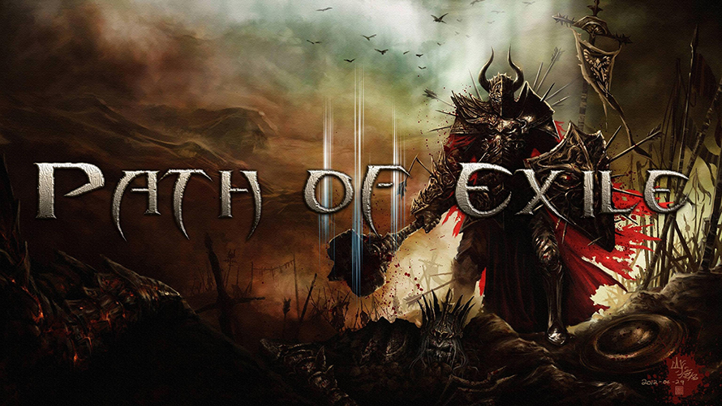

수확
수확 우선 순위
야생뾰족등
- 희귀 아이템 재련 (접두어 모두 유지)
- 희귀 아이템 재련 (접미어 모두 유지)
- 희귀 아이템 재련. 같은 유형의 속성이 나올 가능성 낮음
- 희귀 아이템 재련. 같은 유형의 속성이 나올 가능성 높음
베이스아이템
중요한 베이스아이템
목걸이
마노 목걸이 lv85
황수정 목걸이 lv85
스킬군주얼
대형 스킬 군주얼
냉기 피해 12% 증가 lv68
성유
성유 인챈트 목록
주권:은빛성유 3개 - 스킬의 마나 점유 효율 12% 증가 / 자신의 비-저주 오라 스킬 효과 10% 증가